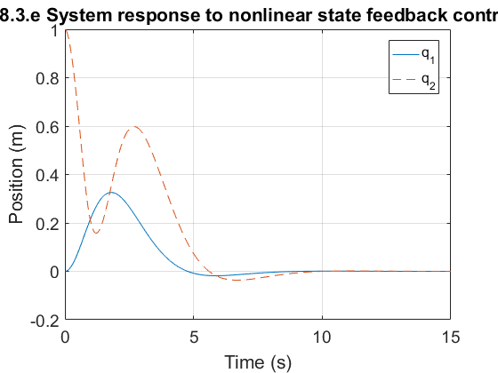

close all
clear
clc
set(0, 'DefaultAxesFontSize', 14);
set(0,'DefaultAxesXGrid','on','DefaultAxesYGrid','on')
syms q q1 q2 q3 q4
q = [q1;q2;q3;q4];
f = [q3;q4;-q1-0.5*(q1-q2)-0.2*(q1-q2)^3;-4*q1+0.5*(q1-q2)+0.2*(q1-q2)^3];
g = [0;0;0;1];
h = q1;
Lfh = jacobian(h,q)*f;
Lgh = jacobian(h,q)*g;
LgLfh = jacobian(Lfh,q)*g;
Lf2h = jacobian(Lfh,q)*f;
LgLf2h = jacobian(Lf2h,q)*g
Lf3h = jacobian(Lf2h,q)*f;
LgLf3h = jacobian(Lf3h,q)*g
Lf4h = jacobian(Lf3h,q)*f;
z = [h;Lfh;Lf2h;Lf3h]
v = [-4 -8.4 -8.92 -4.2]*z
u = inv(LgLf3h)*(-Lf4h + v)
qdot = f + g*u
[t,q] = ode45(@hw8_3func, [0 15], [0;1;0;0]);
plot(t,q(:,1), '-', t,q(:,2), '--')
xlabel('Time (s)')
ylabel('Position (m)')
title('8.3.e System response to nonlinear state feedback control')
legend('q_1', 'q_2', 'Location', 'Northeast')
LgLf2h =
0
LgLf3h =
(3*(q1 - q2)^2)/5 + 1/2
z =
q1
q3
q2/2 - (3*q1)/2 - (q1 - q2)^3/5
q4*((3*(q1 - q2)^2)/5 + 1/2) - q3*((3*(q1 - q2)^2)/5 + 3/2)
v =
(469*q1)/50 - (223*q2)/50 - (42*q3)/5 + (223*(q1 - q2)^3)/125 - (21*q4*((3*(q1 - q2)^2)/5 + 1/2))/5 + (21*q3*((3*(q1 - q2)^2)/5 + 3/2))/5
u =
((469*q1)/50 - (223*q2)/50 - (42*q3)/5 + (223*(q1 - q2)^3)/125 - ((3*(q1 - q2)^2)/5 + 3/2)*((3*q1)/2 - q2/2 + (q1 - q2)^3/5) + ((3*(q1 - q2)^2)/5 + 1/2)*((7*q1)/2 + q2/2 - (q1 - q2)^3/5) - (21*q4*((3*(q1 - q2)^2)/5 + 1/2))/5 + (21*q3*((3*(q1 - q2)^2)/5 + 3/2))/5 + q3*(q3*((6*q1)/5 - (6*q2)/5) - q4*((6*q1)/5 - (6*q2)/5)) - q4*(q3*((6*q1)/5 - (6*q2)/5) - q4*((6*q1)/5 - (6*q2)/5)))/((3*(q1 - q2)^2)/5 + 1/2)
qdot =
q3
q4
q2/2 - (3*q1)/2 - (q1 - q2)^3/5
(q1 - q2)^3/5 - q2/2 - (7*q1)/2 + ((469*q1)/50 - (223*q2)/50 - (42*q3)/5 + (223*(q1 - q2)^3)/125 - ((3*(q1 - q2)^2)/5 + 3/2)*((3*q1)/2 - q2/2 + (q1 - q2)^3/5) + ((3*(q1 - q2)^2)/5 + 1/2)*((7*q1)/2 + q2/2 - (q1 - q2)^3/5) - (21*q4*((3*(q1 - q2)^2)/5 + 1/2))/5 + (21*q3*((3*(q1 - q2)^2)/5 + 3/2))/5 + q3*(q3*((6*q1)/5 - (6*q2)/5) - q4*((6*q1)/5 - (6*q2)/5)) - q4*(q3*((6*q1)/5 - (6*q2)/5) - q4*((6*q1)/5 - (6*q2)/5)))/((3*(q1 - q2)^2)/5 + 1/2)
